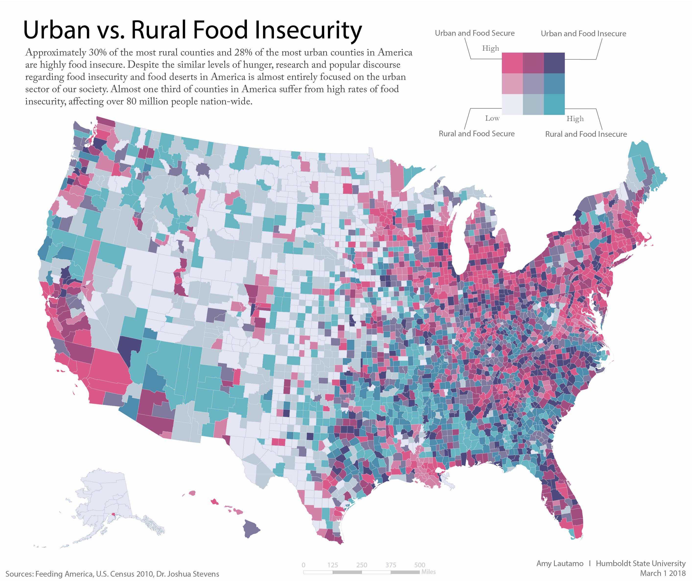
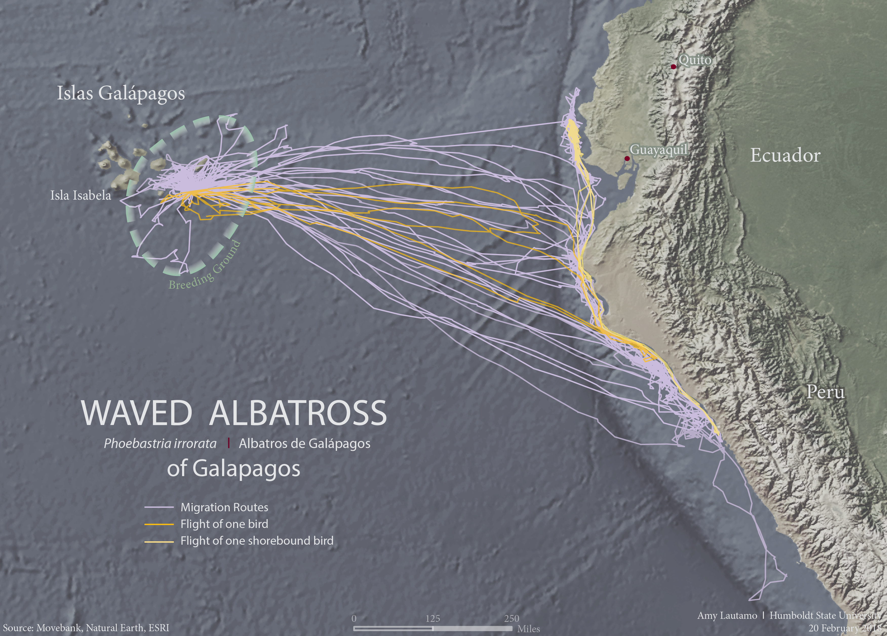
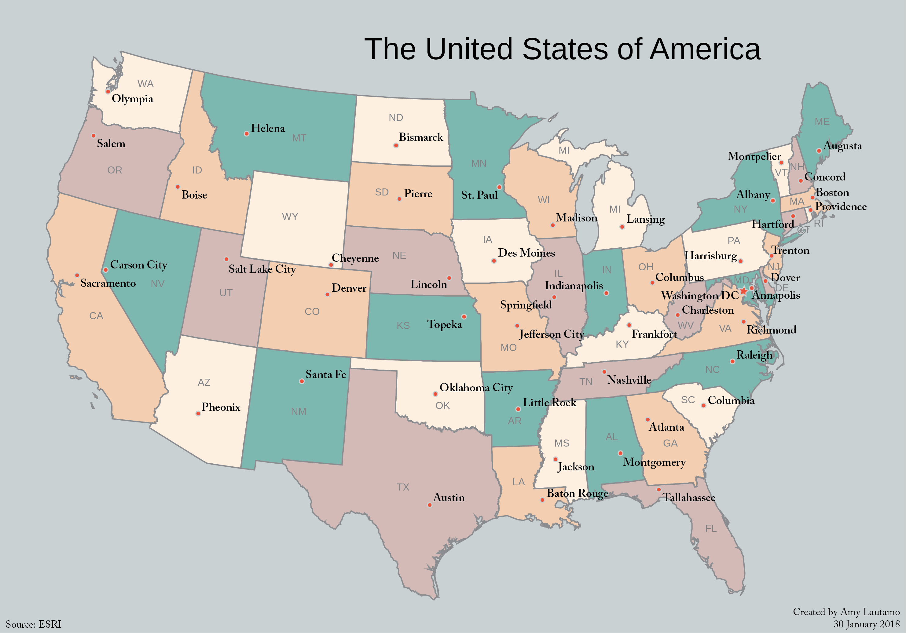
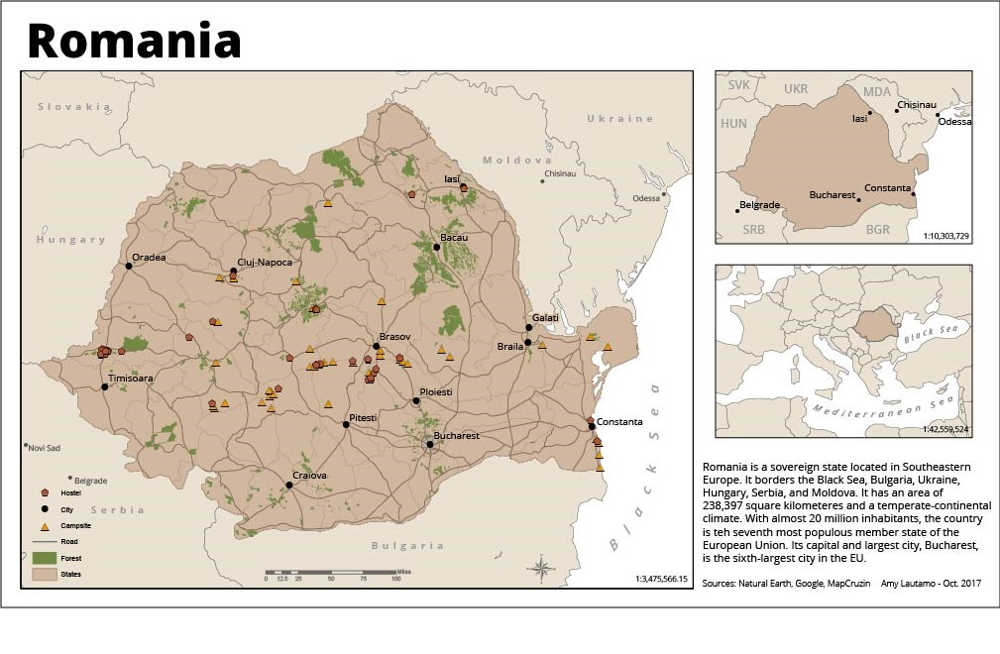
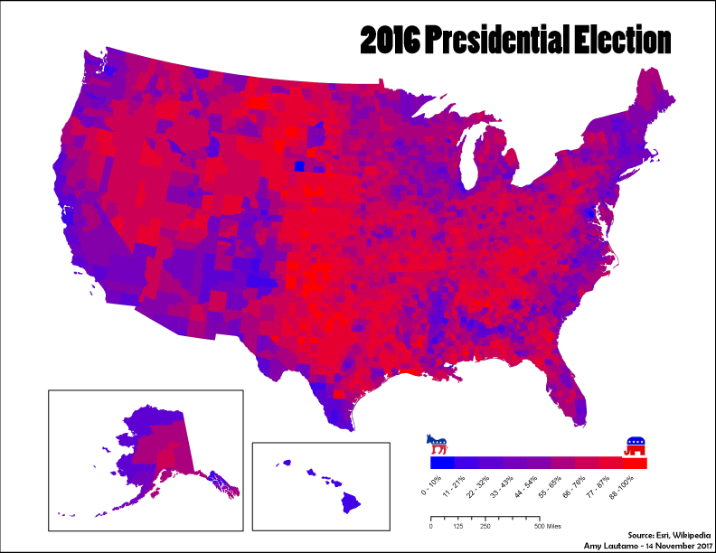

I am a senior, graduating in Spring 2018. I am working on a Bachelors in Geography with a minor in Geospatial Studies. I am primarily a human geographer.
Recent Work
Bivariate Color Map

Urban vs. Rural Food Insecurity
This map uses Dr. Joshua Steven's bivariate color map technique to show U.S. counties by their population density and food insecurity rate. This map will be used as part of a research project regarding rural food insecurity.Download Image
Animal Migration Map

Waved Albatross Migration Map
This map shows the migration patterns of the Waved Albatross of Galapagos.Download Image
Baltimore Firefly Map

City of Baltimore Crime Surveillance
This map utilizes the firefly cartography technique developed by John Nelson to show the crime surveillance infrastructure of the City of Baltimore.Download Image
Oil Infrastructure

Gulf Coast Oil Infrastructure
This map provides a relatively comprehensive image of the mass amount of oil infrastructure on the gulf coast.Download Image
United States Map: Capitals

U.S. State Capitals
This map is meant as an educational tool to help in learning the state capitals.Download Image
Awkward Country Map: Norway
Norway
This was a challenge to map an awkwardly shaped country. I chose to map Norway.Download Image
Projections
Elementary School World Map
This is a world map meant for an elementary school classroom. Download Image
Social Studies Map
Finland Social Studies Map
This map is a basic map of Finland made for a social studies class. It shows the various districts of Finland. Download Image
Minnesota Labeling
A feature map of Minnesota.
This is a feature map of Minnesota. Download Image
Terrain: Madagascar
A map of the terrain of Madagascar and the coast of Africa.
This map shows the terrain of Madagascar and the nearby coast of Africa. It was mostly created in ArcMap. Download Image
Symbolization: Romania

A map of Romania's forests and cheap sleeps.
This map shos Romania at multiple scales. It specifically shows the forests, campsites, and hostels of Romania as well as some major cities and roads. Download Image
Election Map

2016 Presidential Election Map
This is a map of the 2016 U.S. presidential election. The colors provide a more realistic representation of voting percentages by utilizing purple to show the areas that are neither extremely conservative nor extremely liberal. Download Image
Story Map of a Weekend in Old Hangtown
A Weekend in Old Hangtown
Get In Touch
Drop me a line


{kind=link}
{kind=link}
{kind=link}
{kind=link}
{kind=link}
{kind=link}
{kind=link}
{kind=link}
{kind=link}
{kind=link}